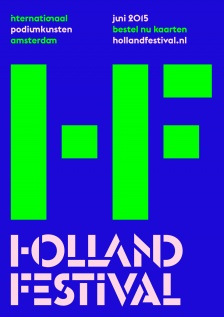
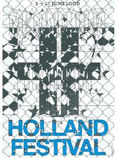
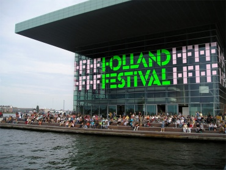

Holland Festival
In 2005 the Dutch designers Maureen Mooren and Daniel van der Velden
designed a new identity for the Holland Festival. The campaign which comprised
a series of posters, printed materials and advertisements was evident throughout
the Netherlands until the end of June.


